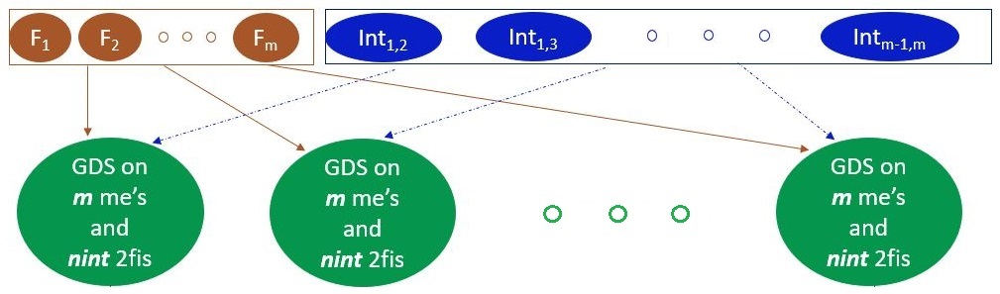

Rakhi Singh, agrakhi@gmail.com
John Stufken, jstufken@uncg.edu
Screening experiments are useful for screening out a small number of truly impor- tant factors from a large number of potentially important factors. The Gauss-Dantzig Selector (GDS) is often the preferred analysis method for screening experiments. Just considering main-effects models can result in erroneous conclusions, but including in- teraction terms, even if restricted to two-factor interactions, increases the number of model terms dramatically and challenges the GDS analysis. We propose a new analysis method, called Gauss-Dantzig Selector Aggregation over Random Models (GDS-ARM), which performs a GDS analysis on multiple models that include only some randomly selected interactions. Please see Singh and Stufken (2022) for more details.
Development status
This package is available in CRAN. The programs are in stable development phase. Any major changes to include factors at more than two-levels will be added over time.
Installation
install.packages("GDSARM")The latest version of the package under development can be installed from GitHub:
install.packages("devtools")
library(devtools)
remotes::install_github("agrakhi/GDSARM")Bug reports
Please submit any bugs or issues (or suggestions) using the issues tab of the repo.
Usage
The main functions users will use are GDSARM and GDS_givencols. GDSARM is the main method. GDS_givencols is the helper function which helps user to run GDS on only main effects and on main effects plus all two-factor interactions.
library(GDSARM)
data(dataHamadaWu)
X = dataHamadaWu[,-8]
Y= dataHamadaWu[,8]
delta.n=10
n = dim(X)[1]
m = dim(X)[2]
nint = ceiling(0.2*choose(m,2))
nrep = choose(m,2)
ntop = max(20, nint*nrep/(2*choose(m,2)))
pkeep = 0.25
cri.penter = 0.01
cri.premove = 0.05
design = X
# GDS-ARM with default values
GDSARM(delta.n,nint, nrep, ntop,pkeep, X, Y,cri.penter, cri.premove)
# GDS-ARM with default values but with weak heredity
opt.heredity="weak"
GDSARM(delta.n,nint, nrep, ntop,pkeep, X,Y,cri.penter, cri.premove,opt.heredity)
data(dataHamadaWu)
X = dataHamadaWu[,-8]
Y= dataHamadaWu[,8]
delta.n=10
# GDS on main effects
GDS_givencols(delta.n,design = X, Y=Y, which.cols = "main")
# GDS on main effects and two-factor interactions
GDS_givencols(delta.n,design = X, Y=Y)Check out the vignettes for more examples and details.
License
This package is released in the public domain under the General Public License GPL.
References
Singh, R. and Stufken, J. (2022). Factor selection in screening experiments by aggregation over random models, 1–31. https://arxiv.org/abs/2205.13497